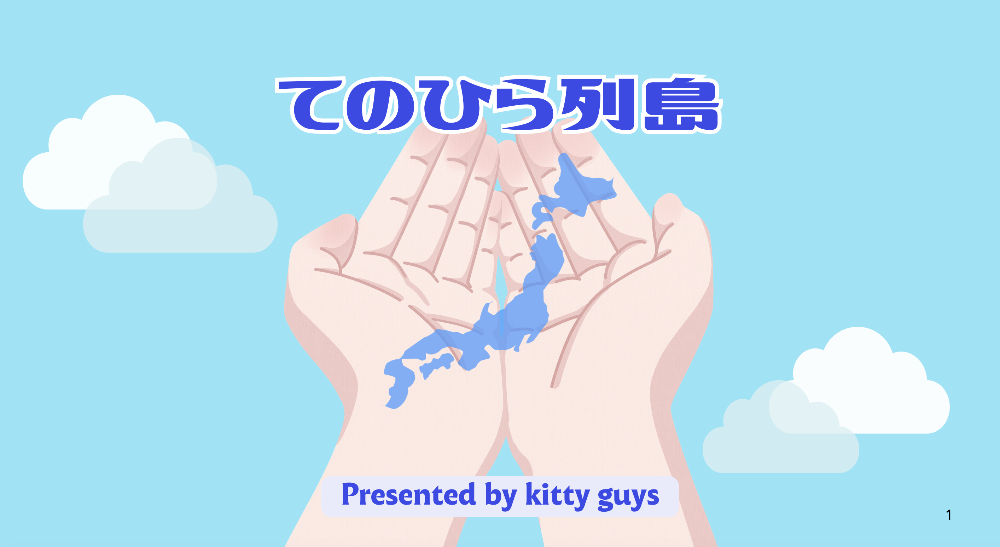
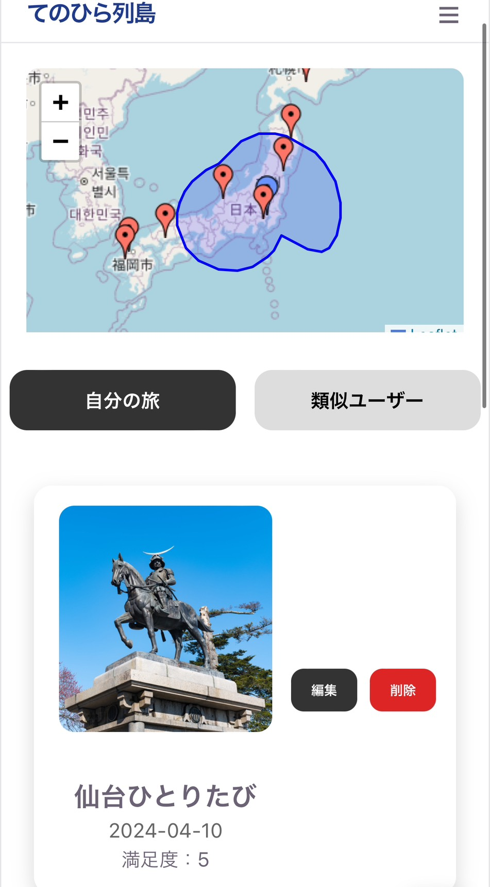
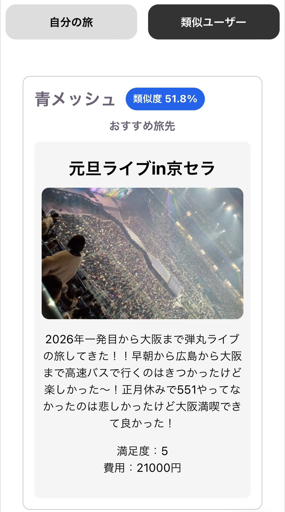
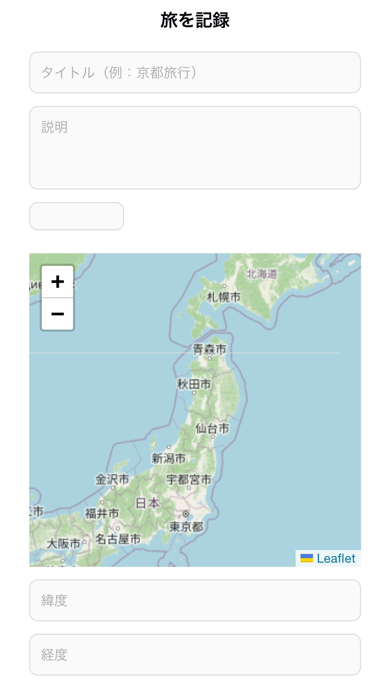

あなたの旅の記録が“あなたらしい日本の形”をつくる。類似度で近いユーザーの満足度が高い目的地を提示し、 行動範囲や想定外の場所との出会いを生みます。

行き先は選べるはずなのに、実際には行きやすさや有名さに偏ってしまいがち。
地方の魅力が知られないまま残り、移動や経済活動の“偏り”が生まれています。
行った場所と満足度から、あなたの行動の“形”を可視化します。自分の行動範囲に愛着が生まれます。
AIで過度にパーソナライズするのではなく、類似度が高いユーザーの高満足度スポットを提案します。
行程を考えなくても、類似ユーザーの実際の記録から旅先を見つけられます。
一般的なレコメンドはAIが“最適解”を提示する仕組み。
このアプリはそれとは違い、 人間の移動の偏りそのものを価値として扱う。



ピッチ用スライドはこちらから確認できます
スライドを開くWebアプリとして旅記録・地図生成・レコメンドを実装済み。
日常的に使えるモバイルアプリへ拡張。
移動手段・宿泊・体験など旅の全体設計を記録可能に。
円ではなく「行動そのものの形」で日本を表現。
食べ歩き・レジャー・聖地巡礼・ライブなどのカテゴリを付与して、好みに応じた類似度設定を可能にします。
行動範囲を色で着色し、あなた専用の行動の形を多次元的に表示します。
現在は旅したことのみ記録できますが、将来的には旅程、宿泊、スポット詳細を登録できるようにし記憶を鮮明に保ちます。
「小さくなる日本」というテーマに対して、行動範囲の縮小や経済活動の縮小という多角的な意味に向き合い、心理的距離の縮小を通じて地域活性を目指します。
今後はプレミアム機能（詳細な旅程管理、オフラインマップ、特別な分析）やパートナー連携でマネタイズを検討します。